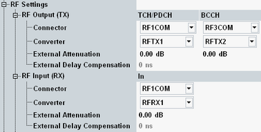

Depending on the selected scenario, this section configures only the RF input path or one input and one output path or one input and two output paths. Most parameters are configurable per path.

The following parameters configure the RF output path of the R&S CMW.
Selects the output path for the generated RF signal, i.e. the output connector and the TX module to be used.
Depending on your hardware configuration, there are dependencies between both parameters. Select the RF connector first. The "Converter" parameter offers only values compatible with the selected RF connector.
For scenario "BCCH and TCH/PDCH", there are two sets of settings. The first set ("RF Settings > RF Output") defines the output path for the TCH/PDCH downlink signal. The second set ("RF Settings > BCCH > RF Output") defines the output path for the BCCH downlink signal.
Remote command:Depends on the scenario, see "Routing Settings".
Defines the value of an external attenuation (or gain, if the value is negative) in the output path. With an external attenuation of x dB, the power of the generated signal is increased by x dB. The actual generated levels are equal to the displayed values plus the external attenuation.
If a correction table for frequency-dependent attenuation is active for the chosen connector, then the table name and a button are displayed. Press the button to display the table entries.
For scenario "BCCH and TCH/PDCH", there are two sets of settings. The first set ("RF Settings > RF Output") defines the output path for the TCH/PDCH downlink signal. The second set ("RF Settings > BCCH > RF Output") defines the output path for the BCCH downlink signal.
Remote command:Defines the value of an external time delay in the output path, for example caused by a long optical fiber cable or by an additional instrument in the output path.
As a result, the downlink signal is sent earlier, so that the downlink signal arrives at the MS without delay.
Remote command:The following parameters configure the RF input path of the R&S CMW.
Selects the input path for the measured RF signal, i.e. the input connector and the RX module to be used.
Depends on the scenario, see "Routing Settings".
Defines the value of an external attenuation (or gain, if the value is negative) in the input path. The power readings of the R&S CMW are corrected by the external attenuation value.
The external attenuation value is also used in the calculation of the maximum input power that the R&S CMW can measure.
If a correction table for frequency-dependent attenuation is active for the chosen connector, then the table name and a button are displayed. Press the button to display the table entries.
Defines the value of an external time delay in the input path, for example caused by a long optical fiber cable.
The signaling application uses this information to compensate for the delay and to synchronize the uplink and the downlink despite the delay.
Remote command: